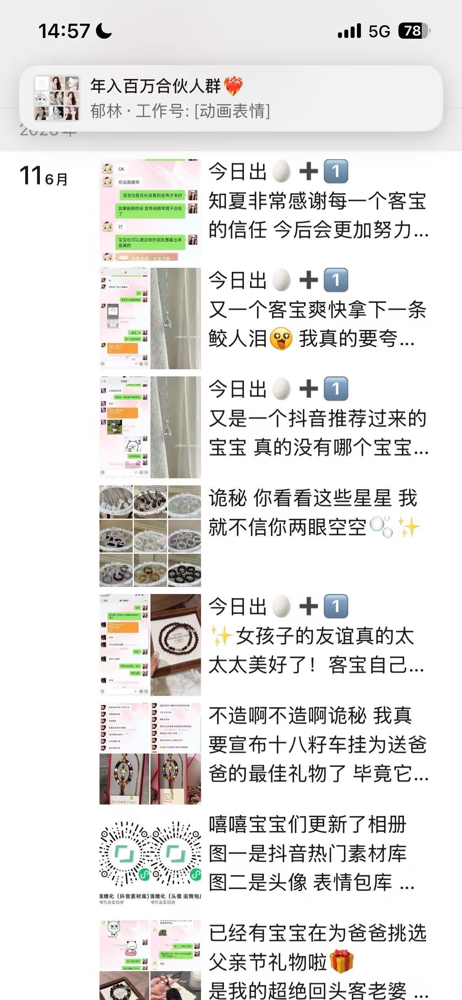
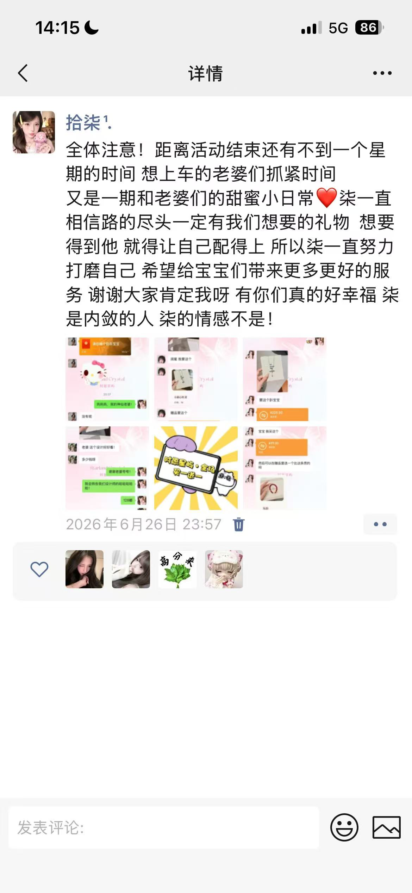
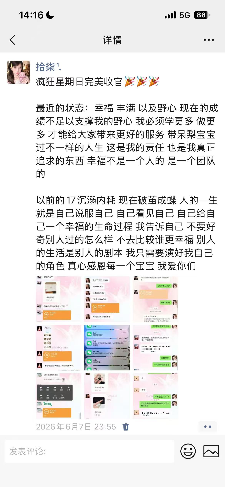
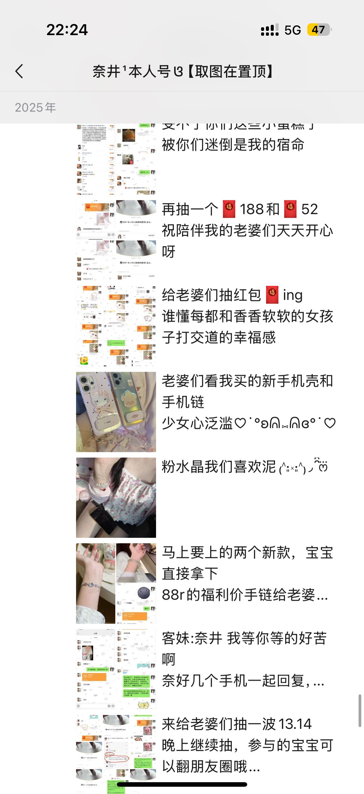
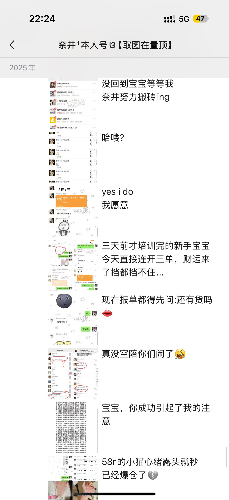
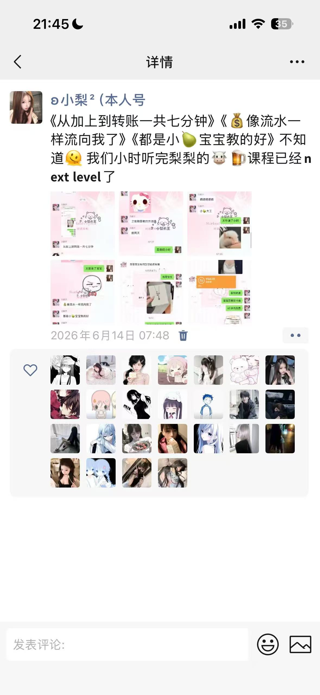
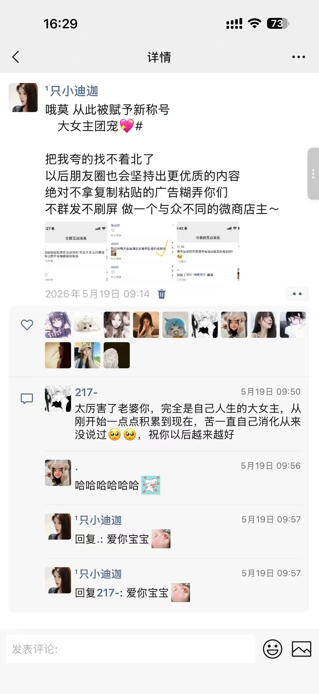
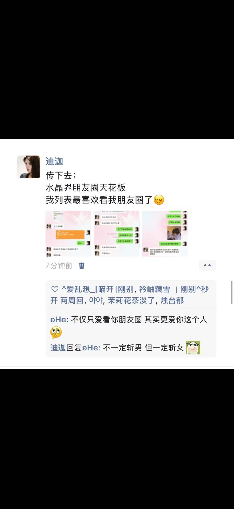
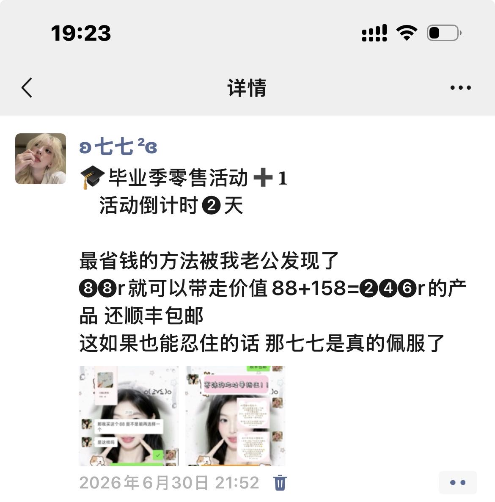
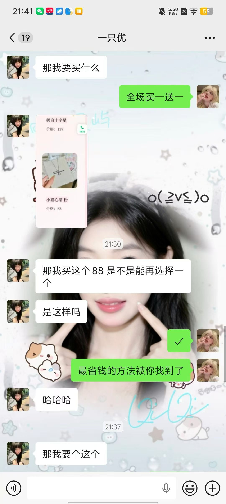

1️⃣文案和排版做好有什么好处
11️⃣文案和排版做好有什么好处
大家应该都知道 刚开始的小代理还没有自己素材的时候 都是通过品牌的素材库来进行朋友圈发布的 那么这个东西他就有一个弊端 很多人在用 甚至很多人她是直接复制粘贴 那么今天七七要交给大家的就是 如何将这个所有人都在用的素材变成专属于你自己的素材 那么排版呢 就是你的客妹她们下单的时候绝大多数都会对你的朋友圈进行考察 如果朋友圈发的一塌糊涂 那么你的转化率也会大大降低 不管你是做精准还是泛流 你的朋友圈都决定了很大程度上你的转化率
第二段课程文字写这里。
22️⃣接下来我给大家看一点优质的零售朋友圈
这些都是品牌朋友圈发的好的老师的图片 七七这里呢 收集出来给大家看一下 其实很明显可以发现跟我们复制粘贴素材库的感觉是不一样的 这些老师的转化率也是非常非常好的









33️⃣写文案的切入点
那我们应该怎样去写文案呢？ 首先我们要去搞清楚一点 你写这个文案你是想表达什么 比如说你想表达你的客妹自助下单 那你就从自助下单去切入 并去再加入几个点“信任”“爽快” 然后再去根据你要表达的意思去把这几个词连贯起来表达 我举个例子 我拿这张我前几天发的原创素材来举例 我个人是习惯于前面发一句主体 然后空格一行后 来补充这个主体 意思就是说 我发的这个素材是关于我们毕业季零售活动对不对 那我前面两行就主要写我们的毕业季零售活动倒计时 再空格一行 根据你的素材整体去写。 你要明白你写这个文案你是想给其他人表达什么意思。那我想表达的是我们这次活动很划算 88可以带走246的产品 那我就一定要去在文案里面去表达出来 要学会去抓住顾客的痛点 没有人不爱贪小便宜 那我们既然都有关于这个痛点的素材了 那我们就去试着表达出来 另外就是 写文案的时候不要一味去模仿 别人的思维和你的思维不一样 你在写文案的时候不管是你做零售还是后期升核心开始招商 一定不要把这个当做任务去完成 你的真诚表达 细心的人也会发现 一定要去找适合自己的风格 有的人他可能就喜欢简洁明了的 有的人她喜欢加可爱的颜文字 找到自己的舒适区很重要


我再举一个例子 前段时间咱们的岫玉手镯不是重新下架了吗 然后咱们团队有很多自家人都在买 包括素材库也发了很多关于岫玉的素材 也能看出这个东西的火爆 那么这就是一个很好的切入点 让其他人知道 这个东西在咱们时愿很火 很多人都在蹲它上架 那么她一看 “哎啥东西 这么多人喜欢”这就是一个痛点 抓住了别人的好奇心 那我们就可以从这方面开始切入 “销冠”“断货”“自家都在抢”用这几个词结合起来组成了属于你自己的文案